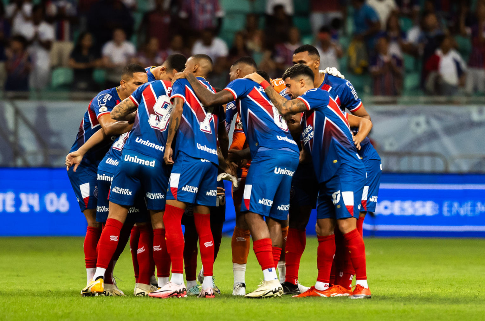

Esporte Clube Bahia, carinhosamente conhecido como "Bahêa" por sua imensa torcida, é um dos clubes mais tradicionais e importantes do futebol brasileiro e a maior força do Nordeste. Fundado em 1º de janeiro de 1931, em Salvador, o clube nasceu da fusão de dois times amadores, a Associação Atlética da Bahia e o Clube Bahiano de Tênis, com a missão de representar o estado com paixão e glória.
Sua história é marcada por um pioneirismo inigualável. O Bahia ostenta a honra de ser o primeiro campeão brasileiro, conquistando a Taça Brasil de 1959 em uma final épica contra o Santos de Pelé, em pleno Maracanã. Este título não apenas colocou o Nordeste no mapa do futebol nacional, mas também garantiu ao clube a primeira vaga brasileira na recém-criada Copa Libertadores da América.
A sala de troféus do Esquadrão de Aço não parou por aí. Em 1988, sob o comando do técnico Evaristo de Macedo e com um time inesquecível liderado por Bobô, o Bahia pintou o Brasil de azul, vermelho e branco novamente, conquistando o bicampeonato brasileiro em uma campanha memorável que culminou na final contra o Internacional.
Principais Conquistas:
Além dos títulos, a identidade do Bahia é forjada por uma torcida apaixonada e vibrante, conhecida por sua lealdade e por transformar a Arena Fonte Nova em um verdadeiro caldeirão. A rivalidade com o Esporte Clube Vitória no clássico "Ba-Vi", um dos maiores e mais intensos do país, move a cidade de Salvador e personifica a paixão do povo baiano pelo futebol. Ídolos como Bobô, Douglas, Baiaco, Beijoca e Nonato são reverenciados como lendas, atletas que personificaram em campo a garra e a técnica que a torcida tanto admira. Hoje, o Esporte Clube Bahia também se destaca por sua gestão moderna e seu forte posicionamento em causas sociais, sendo reconhecido como "O Clube da Democracia". Mais do que um time de futebol, o Bahia é um patrimônio cultural do estado e um símbolo de orgulho e resistência para todo o Nordeste. 